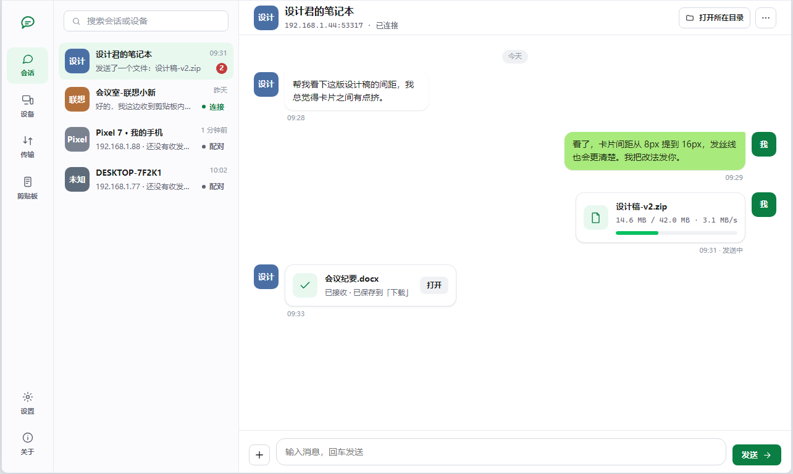

局域网里直连
设备互相发现，然后直接开一条 TCP 连接。数据不经过任何第三方。
- UDP 47654 自动发现，两台设备出现在彼此的列表里
- TCP 47655 承载文件、消息与剪贴板
- 发现不到时，可以手动填对方 IP 直连
局域网直连 · 无服务端
在同一个 Wi-Fi 或网线里的设备之间传文件、传文字、同步剪贴板。 没有服务端、没有账号、没有云端 —— 程序平时只和局域网说话， 唯一一次访问外网，是你亲自点「检查更新」的时候。

六件事，每一件都只发生在你自己的网络里。点开任意一张看它到底怎么工作。
设备互相发现，然后直接开一条 TCP 连接。数据不经过任何第三方。
附近运行本程序的设备被发现后，会自动校验身份、建立设备组关系并打开数据连接。
两者待遇不同，是有意的：图片像消息一样「到了就到」，文件要你亲自同意才落盘。
在一台设备上复制，另一台上直接粘贴 —— 只在你自己的设备组里发生。
左列会话、右侧消息流。传文件、发图片、聊天在同一个地方完成。
该安静的安静，该听话的听话。
三种装法用同一份程序文件，选一种就行 —— 不要两份都装还同时开着。 所有产物由打 tag 的流水线自动构建，附在 GitHub Releases 上。
装到用户目录，带开始菜单项与卸载项，不需要管理员权限。
解压到任意位置，双击即用；不写注册表，想删就删掉整个文件夹。
直装 APK。
%APPDATA%\LocalTransfer\profile.json
—— 它含本机密钥，删掉等于恢复出厂；附近的设备会在重新发现后自动建立关系。
收到的文件与图片默认落在
%USERPROFILE%\Downloads\LocalTransfer\，可以在设置页改。
AGENTS.md 里。